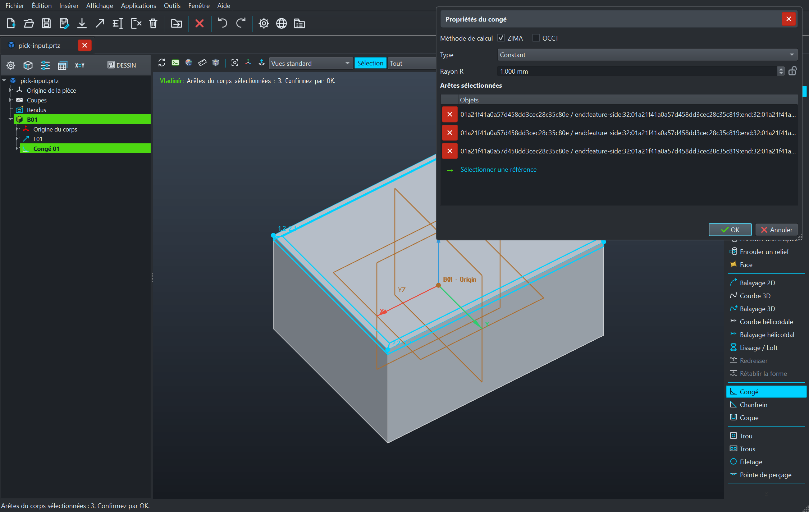
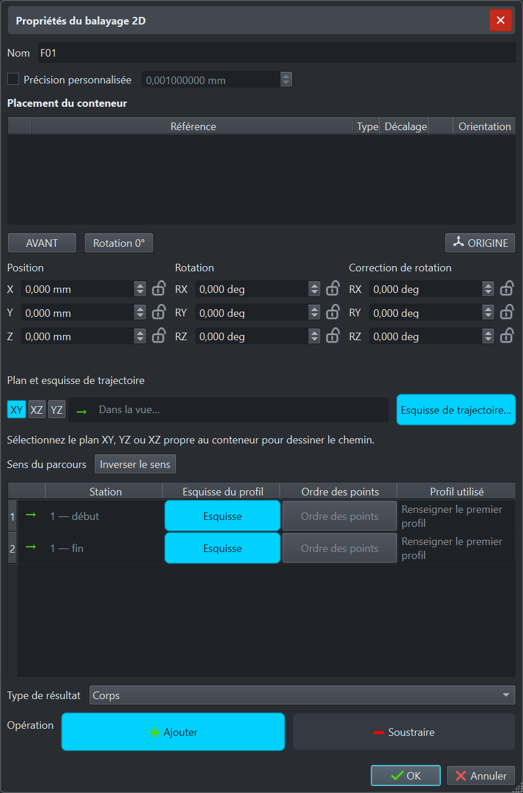
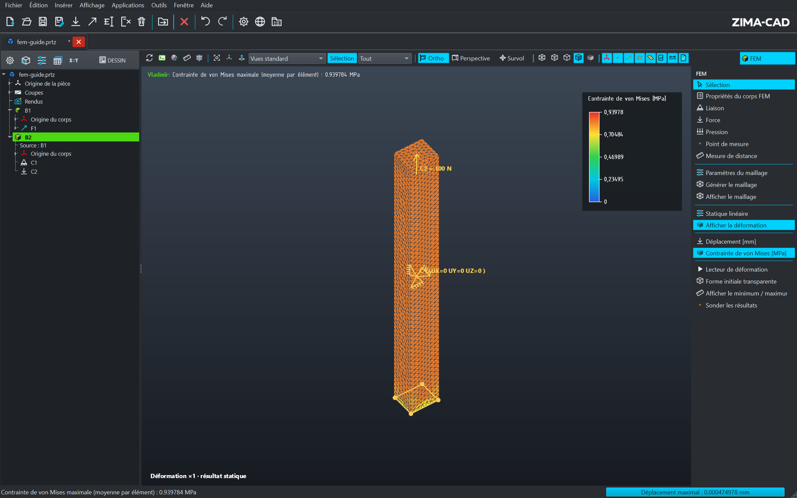
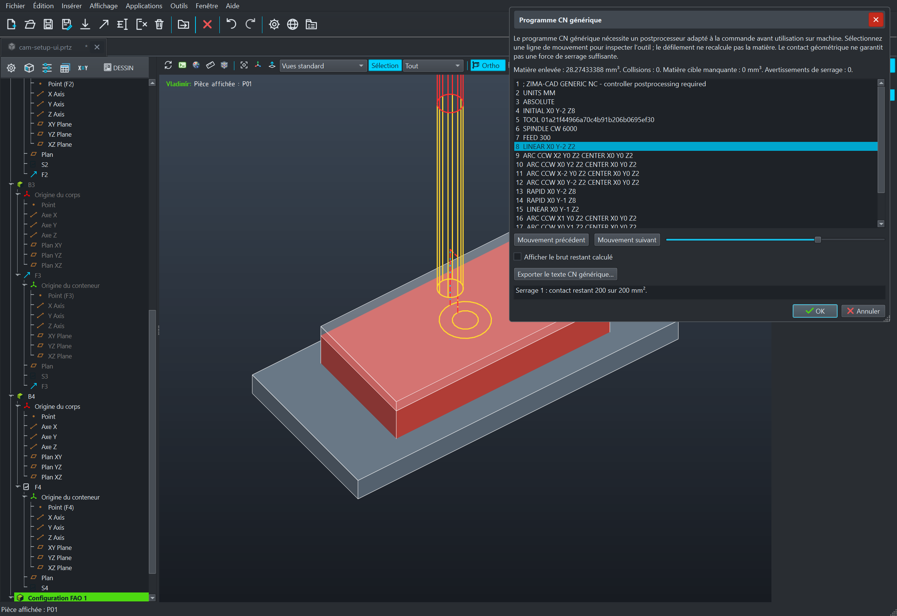
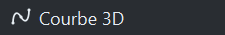
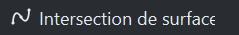
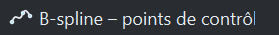
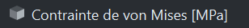

ZIMA-CAD / Guides
Trouvez votre prochaine étape.
Des guides illustrés pour chaque outil. Les mêmes guides sur le Web et dans ZIMA-CAD.
Guides : 157
Guides de prise en main
 Premiers pasOuvrir le guide
Premiers pasOuvrir le guide EsquisseOuvrir le guide
EsquisseOuvrir le guide Extrusion et révolutionOuvrir le guide
Extrusion et révolutionOuvrir le guide
Congé et chanfreinOuvrir le guide
BalayageOuvrir le guide TôlerieOuvrir le guide
TôlerieOuvrir le guide AssemblagesOuvrir le guide
AssemblagesOuvrir le guide PlansOuvrir le guide
PlansOuvrir le guide
Éléments finisOuvrir le guide RenduOuvrir le guide
RenduOuvrir le guide
FAOOuvrir le guideCommandes communes
Corps et résultats dérivés
Modélisation
AxeCréez un axe de référence fini dont les extrémités sont indépendantes.Ouvrir le guideBalayage 2DBalayez des profils de station le long d’un parcours plan propre.Ouvrir le guideBalayage 3DBalayez des profils sur un parcours spatial défini par des points.Ouvrir le guideBalayage hélicoïdalBalayez une section sur un parcours hélicoïdal contrôlé.Ouvrir le guideChanfreinChanfreinez des arêtes d’entrée avec des distances ou un angle contrôlés.Ouvrir le guideCongéArrondissez les arêtes choisies du solide d’entrée réel ou d’une coque cousue.Ouvrir le guideCoqueÉvidez les solides calculés vers l’intérieur en conservant une épaisseur de paroi.Ouvrir le guideCourbe 3DDéfinissez un parcours spatial par des points natifs persistants.Ouvrir le guideCourbe hélicoïdaleCréez un parcours hélicoïdal indépendant sans section balayée.Ouvrir le guideEnrouler un reliefCréez de la matière en relief ou en creux à partir de contours fermés enroulés.Ouvrir le guideEnrouler une esquisseEnroulez une esquisse plane sur des faces analytiques prises en charge.Ouvrir le guideEsquisseCréez une esquisse plane appartenant à une fonction de référence.Ouvrir le guideExtruderExtrudez un profil pour obtenir un solide, une surface ou une paroi mince.Ouvrir le guideFaceCréez une surface plane délimitée par une esquisse propre.Ouvrir le guideFiletageAjoutez un filetage extérieur cosmétique à un arbre cylindrique.Ouvrir le guideFonctionDéfinissez une géométrie de référence ou une fonction basée sur un profil dans un seul dialogue.Ouvrir le guideLissage / LoftCréez une transition à travers des esquisses de profil planes propres.Ouvrir le guidePlanCréez un plan de référence décalé pour les opérations suivantes.Ouvrir le guidePointCréez un point de référence persistant à l’origine d’une fonction.Ouvrir le guidePointe de perçageAjoutez des pointes coniques aux fonds circulaires de trous existants.Ouvrir le guideProjeter un reliefAjoutez ou retirez un relief avec une esquisse remplie projetée.Ouvrir le guideProjeter une esquisseProjetez une esquisse plane sur des faces sélectionnées.Ouvrir le guideRedresserCalculez l’état redressé de fonctions volumiques formées compatibles.Ouvrir le guideRétablir la formeRétablissez la forme définie après le redressement d’éléments volumiques.Ouvrir le guideRévolutionFaites tourner un profil autour de son axe de construction défini.Ouvrir le guideTordreTordez un profil rempli autour de son axe passant par le centroïde.Ouvrir le guideTrouCréez un trou lisse ou taraudé dans une seule opération.Ouvrir le guideTrousDécoupez des canaux cylindriques suivant des segments d’esquisse.Ouvrir le guide

Surfaces
Coudre les surfacesAssemblez des faces calculées en une coque continue.Ouvrir le guideIntersection de surfacesCréez des courbes d’intersection réutilisables et des points de contact isolés.Ouvrir le guideRemplir la surfaceRemplissez un périmètre fermé par des références à des limites existantes.Ouvrir le guideRogner une surfaceConservez une région choisie d’une surface calculée.Ouvrir le guideSurface généraleConstruisez une surface à partir de limites modifiables appartenant à son conteneur.Ouvrir le guideSurfaces du solideRemplacez un solide calculé par sa peau exacte sans volume.Ouvrir le guideÉpaissir une surfaceTransformez une surface libre ou une coque cousue continue en matière.Ouvrir le guide

Éléments mécaniques
Tôlerie
DXFExportez le contour de fabrication du corps de tôle actif en DXF.Ouvrir le guideDécoupe de tôleDécoupez l’épaisseur locale des régions de tôle atteintes.Ouvrir le guideDéplierCréez un état développé dans l’historique pour les régions de tôle admissibles.Ouvrir le guideFormageInsérez une forme native de bibliothèque dans la tôle.Ouvrir le guidePliCréez un pli circulaire de tôle avec des largeurs d’extrémité modifiables.Ouvrir le guidePli selon une lignePliez la matière de tôle autour d’une ligne d’esquisse finie.Ouvrir le guideProfilDéveloppez un parcours plan en plats et plis enfants ordinaires.Ouvrir le guidePropriétés de tôlerie…Définissez les valeurs par défaut communes de tôlerie de la pièce.Ouvrir le guideReplierRamenez les régions développées admissibles à leur état plié.Ouvrir le guideTransition de tôleReliez un profil demi-rond à un demi-rectangle arrondi ouvert par des panneaux et des plis.Ouvrir le guideTransition de tôle rectangulaireReliez deux enveloppes rectangulaires par une transition de tôle en L ou en U.Ouvrir le guideTôleCréez une tôle plane à partir d’une esquisse fermée.Ouvrir le guideTôle de révolutionCréez une tôle cylindrique ou conique par révolution d’un segment.Ouvrir le guideTôle depuis un corpsReconstruisez une géométrie de tôle compatible depuis un solide calculé.Ouvrir le guideTôle torsadéeCréez une bande de tôle torsadée paramétrique sans modifier d’esquisse.Ouvrir le guide
Esquisse
AjusterSupprimez des portions de courbes dans une seule modification confirmée.Ouvrir le guideAnnulerAbandonnez les modifications de la session actuelle d’esquisse intégrée.Ouvrir le guideArcCréez un arc circulaire défini par centre, début et fin.Ouvrir le guideArc elliptiqueCréez une portion limitée d’ellipse avec de véritables extrémités.Ouvrir le guide Arc par trois pointsCréez un arc circulaire sans définir d’abord son centre.Ouvrir le guideB-spline – points de contrôleModelez une B-spline avec son polygone de contrôle.Ouvrir le guideCercleCréez un cercle exact à partir du centre et d’un point du cercle.Ouvrir le guideCongéRaccordez deux courbes d’esquisse par un congé de rayon défini.Ouvrir le guideContraintesRéglez l’inférence automatique et créez des relations géométriques manuelles.Ouvrir le guideCote universelleSaisissez une cote déduite de la géométrie sélectionnée avec une seule commande.Ouvrir le guideDXFImportez le contenu DXF pris en charge sous forme de bloc dans l’esquisse active.Ouvrir le guideDécalageCréez une courbe décalée dépendante à une distance exacte.Ouvrir le guideEllipseCréez une ellipse définie par son centre et deux demi-axes.Ouvrir le guideImageInsérez une image dans une esquisse et définissez son placement.Ouvrir le guideIntersectionObtenez une référence d’intersection entre la géométrie réelle et le plan de l’esquisse.Ouvrir le guideIntersection → contourUtilisez une intersection avec le plan de l’esquisse comme contour lié.Ouvrir le guideInverserRegardez l’esquisse active depuis l’autre côté de son plan.Ouvrir le guideInverserTournez la vue de l’esquisse active dans son plan par pas de 90°.Ouvrir le guideLigne de constructionCréez une ligne auxiliaire pour un axe ou une symétrie.Ouvrir le guideOKTerminez l’édition de l’esquisse pour revenir à son contexte propriétaire.Ouvrir le guidePointInsérez un point pour placer précisément d’autres géométries.Ouvrir le guidePolygoneCréez un polygone régulier à 4, 6 ou 8 côtés.Ouvrir le guidePolyligneTracez une chaîne continue de segments et d’arcs pris en charge.Ouvrir le guideRainureTracez une rainure avec deux demi-cercles et des segments tangents.Ouvrir le guideRectangleCréez un profil rectangulaire à partir de deux coins opposés.Ouvrir le guideRéférenceAjoutez une géométrie externe comme référence pour les contraintes et cotes.Ouvrir le guideRéférence → contourCréez un contour lié à partir d’une géométrie externe accessible.Ouvrir le guideSegmentTracez un segment droit entre deux points.Ouvrir le guideSpline d’interpolationCréez une courbe lisse passant par les points confirmés.Ouvrir le guideSymétrieCréez une géométrie symétrique par rapport à un axe de l’esquisse.Ouvrir le guideTable de famille...Modifiez les variantes d’un symbole au sein d’une famille.Ouvrir le guideTangente communeCréez un segment tangent commun entre des courbes prises en charge.Ouvrir le guideTexteInsérez et placez un texte appartenant à l’esquisse.Ouvrir le guideVue normaleOrientez la caméra perpendiculairement à l’esquisse active.Ouvrir le guideZone de nomenclatureDéfinissez une zone répétée de nomenclature dans un cartouche.Ouvrir le guide
Arc par trois pointsCréez un arc circulaire sans définir d’abord son centre.Ouvrir le guideB-spline – points de contrôleModelez une B-spline avec son polygone de contrôle.Ouvrir le guideCercleCréez un cercle exact à partir du centre et d’un point du cercle.Ouvrir le guideCongéRaccordez deux courbes d’esquisse par un congé de rayon défini.Ouvrir le guideContraintesRéglez l’inférence automatique et créez des relations géométriques manuelles.Ouvrir le guideCote universelleSaisissez une cote déduite de la géométrie sélectionnée avec une seule commande.Ouvrir le guideDXFImportez le contenu DXF pris en charge sous forme de bloc dans l’esquisse active.Ouvrir le guideDécalageCréez une courbe décalée dépendante à une distance exacte.Ouvrir le guideEllipseCréez une ellipse définie par son centre et deux demi-axes.Ouvrir le guideImageInsérez une image dans une esquisse et définissez son placement.Ouvrir le guideIntersectionObtenez une référence d’intersection entre la géométrie réelle et le plan de l’esquisse.Ouvrir le guideIntersection → contourUtilisez une intersection avec le plan de l’esquisse comme contour lié.Ouvrir le guideInverserRegardez l’esquisse active depuis l’autre côté de son plan.Ouvrir le guideInverserTournez la vue de l’esquisse active dans son plan par pas de 90°.Ouvrir le guideLigne de constructionCréez une ligne auxiliaire pour un axe ou une symétrie.Ouvrir le guideOKTerminez l’édition de l’esquisse pour revenir à son contexte propriétaire.Ouvrir le guidePointInsérez un point pour placer précisément d’autres géométries.Ouvrir le guidePolygoneCréez un polygone régulier à 4, 6 ou 8 côtés.Ouvrir le guidePolyligneTracez une chaîne continue de segments et d’arcs pris en charge.Ouvrir le guideRainureTracez une rainure avec deux demi-cercles et des segments tangents.Ouvrir le guideRectangleCréez un profil rectangulaire à partir de deux coins opposés.Ouvrir le guideRéférenceAjoutez une géométrie externe comme référence pour les contraintes et cotes.Ouvrir le guideRéférence → contourCréez un contour lié à partir d’une géométrie externe accessible.Ouvrir le guideSegmentTracez un segment droit entre deux points.Ouvrir le guideSpline d’interpolationCréez une courbe lisse passant par les points confirmés.Ouvrir le guideSymétrieCréez une géométrie symétrique par rapport à un axe de l’esquisse.Ouvrir le guideTable de famille...Modifiez les variantes d’un symbole au sein d’une famille.Ouvrir le guideTangente communeCréez un segment tangent commun entre des courbes prises en charge.Ouvrir le guideTexteInsérez et placez un texte appartenant à l’esquisse.Ouvrir le guideVue normaleOrientez la caméra perpendiculairement à l’esquisse active.Ouvrir le guideZone de nomenclatureDéfinissez une zone répétée de nomenclature dans un cartouche.Ouvrir le guide

Assemblages
Créer un composantCrée une pièce source ou un sous-assemblage et l’insère dans l’assemblage actif.Ouvrir le guideEnrouler une courbeEnroule une esquisse plane propre sur des faces analytiques pour créer des courbes d’assemblage.Ouvrir le guideInsérer un composantInsère une pièce ou un sous-assemblage existant comme composant lié.Ouvrir le guideProjeter une courbeProjette une esquisse plane sur des faces sélectionnées comme courbes de référence d’assemblage.Ouvrir le guide
Dessins
Afficher / masquer les cotes…Règle la visibilité des annotations originales du modèle dans chaque vue du dessin.Ouvrir le guideAligner les cotesAligne des cotes mesurées parallèles sur la première cote sélectionnée.Ouvrir le guideCotationCrée une cote mesurée liée à la géométrie d’une vue.Ouvrir le guideCotation en chaîneCrée ou prolonge une cotation en chaîne dans une même vue.Ouvrir le guideDXFExporte rapidement la feuille de dessin actuellement active en DXF.Ouvrir le guideInsérer un coudeInsère un coude dans la ligne d’attache d’une cote mesurée du dessin.Ouvrir le guideInsérer un détail…Crée un détail agrandi d’une région délimitée dans une vue existante.Ouvrir le guideInsérer une interruptionInsère une interruption dans la ligne d’attache d’une cote mesurée.Ouvrir le guideInsérer une vueInsère une nouvelle vue de base à partir de la source sélectionnée du dessin.Ouvrir le guidePDFExporte rapidement tout le dessin en PDF dans le dossier relatif configuré.Ouvrir le guideRepèresAjoute des repères numérotés correspondant au premier niveau de nomenclature de la feuille.Ouvrir le guideSymboleInsère un symbole de bibliothèque directement comme annotation de feuille.Ouvrir le guideSélectionRétablit la sélection ordinaire des vues et annotations sur une feuille de dessin.Ouvrir le guideTexteAjoute du texte multiligne ordinaire directement sur une feuille de dessin.Ouvrir le guide
Éléments finis
Afficher la déformationAffichez ou masquez un résultat FEM valide.Ouvrir le guideAfficher le maillageAffichez ou masquez un maillage FEM déjà généré.Ouvrir le guideAfficher le minimum / maximumRepérez le minimum et le maximum de la grandeur affichée.Ouvrir le guideContrainte de von Mises [MPa]Affichez la contrainte équivalente de von Mises en MPa.Ouvrir le guideCréer un FEMCréez un corps FEM lié à un solide calculé d’une pièce.Ouvrir le guideDéplacement [mm]Affichez l’amplitude du déplacement mécanique en millimètres.Ouvrir le guideForceDéfinissez une force mécanique orientée en newtons.Ouvrir le guideForme initiale transparenteComparez le résultat déformé au corps initial transparent.Ouvrir le guideGénérer le maillageGénérez un maillage volumique pour la définition FEM actuelle.Ouvrir le guideLecteur de déformationRéglez l’amplification visuelle et la lecture de la déformation.Ouvrir le guideLiaisonBloquez des translations FEM par une condition mécanique.Ouvrir le guideMesure de distanceComparez la distance initiale et déformée entre deux points de mesure.Ouvrir le guideParamètres du maillageRéglez la densité du maillage et l’ordre des éléments avant sa génération.Ouvrir le guidePoint de mesureEnregistrez un point pour relever régulièrement les résultats FEM.Ouvrir le guidePressionChargez une surface sélectionnée par une pression en MPa.Ouvrir le guidePropriétés du corps FEMModifiez la source et le type d’analyse d’un corps FEM existant.Ouvrir le guideSonder les résultatsRelevez les valeurs locales du résultat FEM affiché.Ouvrir le guideSource de chaleurDéfinissez la puissance thermique totale appliquée à une zone sélectionnée.Ouvrir le guideStatique linéaireLancez la résolution correspondant au type d’analyse du corps FEM actif.Ouvrir le guideTempérature [°C]Affichez le champ de température calculé en °C.Ouvrir le guide

Rendu
Calculer le renduCalcule en arrière-plan une image de la scène de rendu active.Ouvrir le guideCaméraAjoute une caméra au corps de rendu actif.Ouvrir le guideGalerie de rendusOuvre la galerie et le résultat disponible du corps de rendu actif.Ouvrir le guideLumièreAjoute une lumière ponctuelle à la scène de rendu commune.Ouvrir le guideProjecteurAjoute un projecteur directionnel doté d’un cône lumineux réglable.Ouvrir le guidePropriétés du corps de renduModifie les sources et réglages d’une scène de rendu existante.Ouvrir le guideSoleilAjoute un éclairage solaire directionnel à la scène de rendu.Ouvrir le guide
FAO
Calculer la FAOCalcule les trajectoires, le brut restant et les collisions.Ouvrir le guideProgramme CN génériqueAffiche le programme générique calculé, ses mouvements et le brut final.Ouvrir le guidePropriétés de la configuration FAOModifie les entrées, coordonnées de travail et opérations d’une configuration FAO existante.Ouvrir le guide
Aucun guide ne correspond à la recherche.